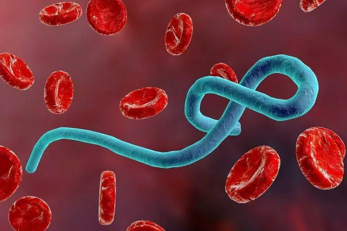
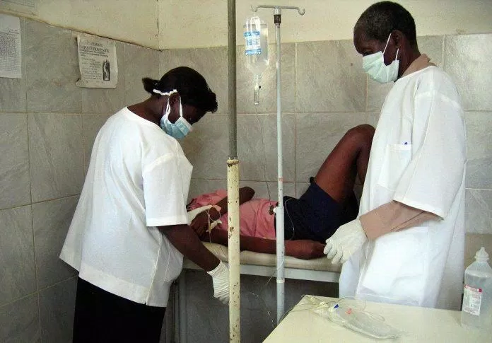

Virus Marburg – Mầm bệnh nguy hiểm vừa được phát hiện và được WHO gọi là “dễ gây ra dịch”
Cập nhật ngày 26 tháng 2 năm 2022
Trong lúc cả thế giới đang tập trung hết sức cho cuộc chiến chống COVID-19 thì một loại virus nguy hiểm khác đã được phát hiện ở châu Phi trong tháng 8 này khiến các chuyên gia y tế lo ngại. Thậm chí WHO đã cảnh báo rằng virus Marburg này thuộc loại “dễ gây ra dịch”.
Cho tới thời điểm này, loại virus nguy hiểm nhất chính là virus Marburg. Loài virus này là một loại siêu vi khuẩn sốt xuất huyết.
Những người bị loại virus này xâm nhập sẽ bị co giật và chảy máu nhầy ở da và các cơ quan khác trên cơ thể. Theo thống kê liên quan đến loại virus này, cứ 10 người mắc bệnh thì có 9 người tử vong.
Sau khi xâm nhập vào các cơ quan, virus sẽ gây cho người bệnh chứng sốt xuất huyết nặng: Co giật và chảy máu các màng nhầy, da và cơ quan nội tạng, với tỉ lệ tử vong từ 50-100% chỉ sau 8-10 ngày.
1. Ca nhiễm bệnh được phát hiện tại châu Phi
Theo Tổ chức Y tế Thế giới (WHO), các cơ quan y tế ở Guinea – một quốc gia thuộc khu vực Tây Phi – đã xác nhận một trường hợp nhiễm virus Marburg vào ngày 9 tháng 8 tại quận Gueckedou, miền Nam nước này. Đây là lần đầu tiên loại virus gây sốt kèm xuất huyết có khả năng lây nhiễm cao tương tự như Ebola này được phát hiện ở Tây Phi.
Trong một phát biểu sau đó, tiến sĩ Matshidiso Moeti, Giám đốc WHO khu vực châu Phi, đã hoan nghênh sự cảnh giác và hành động điều tra nhanh chóng của các nhân viên y tế ở Guinea: “Khả năng lây lan xa và rộng của virus Marburg có nghĩa là chúng ta cần phải chặn đứng nó ngay.”
WHO đang làm việc với các cơ quan y tế địa phương để phản ứng nhanh chóng với tình huống mới này, dựa trên kinh nghiệm và chuyên môn của Guinea trước đây trong việc đối phó với Ebola – căn bệnh có cách thức lây truyền tương tự.
2.Virus Marburg gây ra bệnh gì?
Theo tiến sĩ Eric Cioe-Pena, giám đốc y tế toàn cầu của mạng lưới y tế Northwell Health ở New York, virus Marburg gây ra một bệnh thuộc dạng sốt xuất huyết. Ông giải thích: “Sốt xuất huyết là bất kỳ bệnh sốt truyền nhiễm nào gây chảy máu bên trong cơ thể. Thường là do phản ứng viêm quá mức làm giảm tiểu cầu và các yếu tố đông máu của bệnh nhân”.
Trung tâm Kiểm soát và Phòng ngừa Bệnh tật Mỹ (CDC) cho biết, một số loại virus gây sốt xuất huyết có thể chỉ gây bệnh tương đối nhẹ, nhưng nhiều loại khác có thể dẫn đến bệnh nặng, thậm chí đe dọa tính mạng.
Theo CDC, có 4 họ virus khác nhau có thể gây ra bệnh sốt xuất huyết do virus, được đặt tên là Arenaviridae, Bunyaviridae, Filoviridae và Flaviviridae. Virus Marburg được coi là một Filovirus (thuộc họ Filoviridae).
Tiến sĩ Cioe-Pena cho biết: “Filovirus là cùng họ với virus Ebola. Các triệu chứng hầu như giống hệt với Ebola và tỷ lệ tử vong dao động rất nhiều: từ thấp hơn Ebola – khoảng 28% là tỷ lệ tử vong thấp nhất – cho tới 88% là tỷ lệ tử vong cao nhất được ghi nhận.” Ông cũng nói thêm rằng các triệu chứng bao gồm sốt, khó chịu, đau nhức cơ thể, buồn nôn, nôn mửa, tiêu chảy và xuất huyết nội tạng.
3.Theo WHO, virus Marburg là tác nhân “dễ gây ra dịch bệnh”
WHO gọi căn bệnh này là “dễ gây ra dịch”, tức là nó có thể lây lan dễ dàng từ người này sang người khác nếu không được ngăn chặn. Trong quá khứ đã từng có những đợt bùng phát dịch Marburg ở các khu vực khác của châu Phi, bao gồm các nước Angola, Uganda và Nam Phi.
Tiến sĩ Cioe-Pena cho biết: “Các Filovirus không dễ lây lan như những gì chúng ta đã quen với COVID-19. Sự lây nhiễm thường xảy ra khi tiếp xúc trực tiếp với dịch cơ thể của một người bị nhiễm bệnh, thường là các thành viên thân thiết trong gia đình hoặc những người tham gia nghi thức tang lễ có tiếp xúc gần với cơ thể”.

Nhưng tin tốt là các nhân viên y tế ở Guinea rất cảnh giác trong việc ngăn ngừa bệnh sốt xuất huyết do virus, do đã trải qua đợt bùng phát dịch Ebola vào năm 2014. Virus Marburg được phát hiện chỉ sau một trường hợp bị nhiễm đã cho thấy các nước Tây Phi rất quyết tâm ngăn chặn một dịch bệnh như từng xảy ra năm 2014.
4.Virus Marburg đến từ đâu?
Một bài báo được đăng năm 2012 trên Tạp chí Virus cho biết rằng đợt bùng phát sốt xuất huyết do filovirus đầu tiên được ghi nhận diễn ra ở Đức và Nam Tư cũ vào năm 1967. Đó là khi các nhân viên phòng thí nghiệm ở Marburg và Frankfurt (Đức), ở Belgrade và Nam Tư (nay là Serbia), bị nhiễm một “tác nhân lây nhiễm chưa từng biết trước đây”.
Trong số 31 bệnh nhân diễn tiến đến bệnh nặng, đã có 7 trường hợp tử vong. Theo bài báo này, nguồn lây bệnh bắt nguồn từ những con khỉ xanh châu Phi được nhập khẩu từ Uganda và được vận chuyển đến các địa điểm nói trên.
Nhưng ngày nay chúng ta đã biết rằng khỉ không phải là nguồn gốc thực sự của virus. Tiến sĩ Cioe-Pena cho biết: “Vật chủ của virus Marburg là loài dơi ăn quả. Tuy nhiên chúng không có dấu hiệu bệnh tật và có thể mang virus trong người”.
Sau đó virus có thể lây sang vật chủ trung gian (như khỉ) rồi từ đó truyền sang người, hoặc có thể lây trực tiếp cho người khi tiếp xúc với dơi ăn quả hoặc phân của chúng.
5.Các dấu hiệu và triệu chứng của bệnh do virus Marburg gây ra
Bác sĩ Teresa Murray Amato chuyên về cấp cứu tại New York (Mỹ) cho biết, các dấu hiệu và triệu chứng của sốt xuất huyết Marburg có thể xuất hiện trong vòng 5 đến 10 ngày kể từ khi tiếp xúc với virus, bao gồm:
- Đột ngột lên cơn sốt cao
- Ớn lạnh
- Đau đầu
- Nhức mỏi cơ thể
Bác sĩ Amato cho biết: “Sau khoảng 5 ngày kể từ khi có các triệu chứng ban đầu, phát ban sẽ chủ yếu xuất hiện ở ngực và lưng. Các triệu chứng khác sau đó xảy ra bao gồm buồn nôn, nôn mửa và tiêu chảy, đau ngực và đau bụng.” Cô cũng bổ sung thêm rằng có thể xuất hiện triệu chứng vàng da, tuyến tụy và gan bị viêm dẫn đến suy gan và chảy máu dữ dội.
6.Điều trị bệnh do virus Marburg như thế nào?
Bác sĩ Amato giải thích rằng mặc dù hiện nay chưa có phương pháp điều trị cụ thể, nhưng hầu hết những người mắc bệnh này sẽ cần được truyền dịch qua đường tĩnh mạch, bù chất điện giải, thở oxy, truyền máu và các chế phẩm máu. Hiện tại không có vaccine nào chống lại loại virus này.

“Khoảng 25 đến 30% những người mắc bệnh sốt xuất huyết Marburg sẽ không chống chọi được với căn bệnh này,” bác sĩ Amato cho biết, và cảnh báo rằng căn bệnh này không dễ xác định vì biểu hiện ban đầu giống với nhiều bệnh nhiễm virus phổ biến khác. Điều quan trọng là bệnh nhân phải báo với bác sĩ nếu đã từng đi đến khu vực có thể tiếp xúc với virus Marburg.